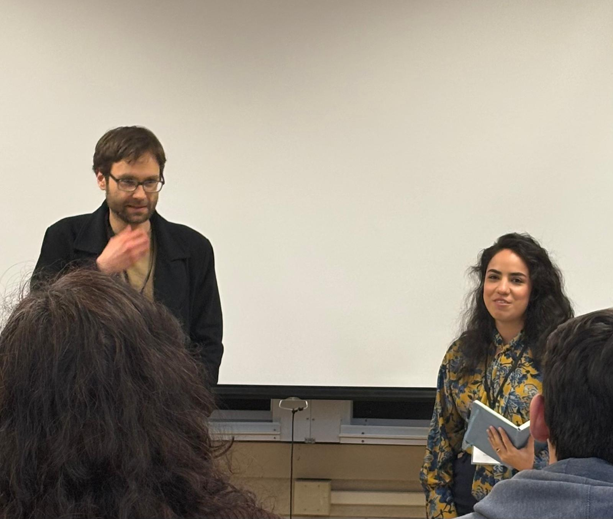

Curriculum Vitae
CV
Department of Philosophy, University of Illinois at Urbana‑Champaign.
Education
Since 2024Ph.D., PhilosophyUIUC. Supervised by Prof. John Schwenkler.
2019Visiting ResearcherPhilosophy, UC Berkeley. Invited by Prof. Alva Noë.
2018Visiting ResearcherPhilosophy, University of Chicago. Invited by Prof. James Conant.
2017–2023Ph.D., PhilosophyUniversity of Leipzig. Supervised by Prof. James Conant.
2015–2017M.A., PhilosophyUniversity of Leipzig. Supervised by Prof. Pirmin Stekeler-Weithofer. Grade: 1.1.
2012–2015B.A., PhilosophyUniversity of Leipzig. Supervised by Prof. Pirmin Stekeler-Weithofer. Grade: 1.2.
2010–2015B.A., Literary WritingUniversity of Leipzig. Supervised by Prof. Hans-Ulrich Treichel. Grade: 1.7.
Public Presentations
10/2026“Grasping, Using, Dominating? A Heideggerian Critique of Common Assumptions about the Human Hand.”Annual Conference of the Illinois Philosophical Association (IPA). Illinois State University, Normal.
07/2026“On the Logical Form of Obligations to Oneself.”Workshop on Obligations to Oneself. University of Göttingen. (Invited speaker)
07/2025“Ergative verbs and bodily action. Rebutting the linguistic argument for agent-causalism.”7th Göttingen / Chicago Graduate Conference. University of Göttingen.
06/2025“Play as an autotelic activity.”SoPhA 2025 – Action. University of Nantes.
01/2025“Explanatory reasons, actions, and the right fit.”AIL5. Virtual.
10/2024“Epistemic actions and extended cognition.”2nd Annual Web Conference of the ISPSM. Virtual.
07/2024“On the right place of causation in action.”6th Göttingen / Chicago Graduate Conference. University of Göttingen.
01/2024“Actions, bodily movements, and events in the world.”AIL4. Virtual.
10/2023“Causally complex actions and extended cognition.”Warwick–Geneva–Leipzig Interdepartmental Workshop. University of Geneva. (Invited speaker)
07/2023“Causally complex actions and extended cognition.”5th Göttingen / Chicago Graduate Conference. University of Göttingen.
02/2023“On causally complex action. What does it mean to cause a change by acting?”ECOM’s 4th Graduate Conference – Kinds of Action. Virtual.
01/2022“Peter Strawson und der Angriff auf die Korrespondenztheorie der Wahrheit.”Leipziger Promotionsvorträge. University of Leipzig.
12/2021“What does it mean to inhibit an action?”3rd International Workshop on CIFMA. Virtual.
08/2021“On the search of Cartesian ideas in interruption and cancellation studies.”28th Conference of the European Society for Philosophy and Psychology (ESPP). Virtual.
09/2020“Against the Illusory Will Hypothesis.”2nd International Workshop on CIFMA. Virtual.
12/2019“The influence of the spectator on the internal teleology of sport games.”HSSA Workshop – The Role of the Spectator. UC Berkeley.
12/2019“An analysis of identity based on Frege's knowledge-requirement for identity statements.”Phil Forum. UC Berkeley.
10/2019“What’s puzzling Gottlob Frege?”HSSA Workshop – Approaches to Identity. UC Berkeley.
09/2019“Descartes, Libet and the free will.”HSSA Colloquium. UC Berkeley. (Invited speaker)
06/2019“Identity.”HSSA Spring Symposium. UC Berkeley.
06/2019“Wie wirkt der freie Wille?”Philosophische Sommergespräche. University Erfurt.
01/2019“Benjamin Libet und der freie Wille.”Leipziger Promotionsvorträge. University of Leipzig.
07/2018“Hegel on intention.”Philosophy of Right – Kant, Fichte, Hegel. University of Leipzig.
Conference Organization
03/2026UIUC Grad ConferenceWith Ana López. Keynote speakers: Anton Ford, John Schwenkler.
12/2019HSSA Workshop – The Role of the SpectatorWith Viktoria Huegel. UC Berkeley.
10/2019HSSA Workshop – Approaches to IdentityUC Berkeley.

Expert Reports & Supervision
JournalsRefereeErgo; Synthese; Sport, Ethics and Philosophy; Philosophical Psychology; Arbeitstitel.
M.A.Thesis supervision1 thesis, University of Leipzig.
Scholarships
2026–27Dissertation Completion FellowshipUIUC.
2019Travel and Research ScholarshipDAAD.
2018–21Full Scholarship for graduate studentsState of Saxony.
2018Travel and Research ScholarshipFAGI.
2017Full Scholarship for undergraduate studentsStudienstiftung des Deutschen Volkes.
Graduate Coursework
Fall 2025On the Cognitive SciencesUIUC. With Prof. John Hummell.
Spring 2025On the Philosophy of AIUIUC. With Prof. Kevin Scharp.
Spring 2025On VoluntarinessUIUC. With Prof. John Schwenkler.
Fall 2024On Race, Sex, and GenderUIUC. With Prof. Alison Kerr and Prof. Jordan Pascoe.
Fall 2024On the Philosophy of MindUIUC. With Prof. John Schwenkler.
Spring 2024On MetaphysicsUIUC. With Prof. Christopher Weaver.
Spring 2024On the Philosophy of LogicUIUC. With Prof. Jonathan Livengood.
Summer 2017On the Philosophy of EmbodimentLeipzig. With Prof. Kristina Musholt.
Winter 2016On Hegel’s Philosophy of RightLeipzig. With Prof. Mathias Haase and Dr. Wolfram Gobsch.
Winter 2016On DispositionsLeipzig. With Prof. Kristina Engelhard.
Winter 2016On Self-ObjectivizationLeipzig. With Prof. Thomas Khurana.
Summer 2016On the Philosophy of GamesLeipzig. With Dr. Geert Lueke-Lueken.
Summer 2016On Thought ExperimentsLeipzig. With Dr. Geert Lueke-Lueken.
Summer 2016On the Theories of RationalityLeipzig. With Dr. Jens Gillessen.
Winter 2015On Frege’s Foundations of ArithmeticLeipzig. With Prof. Ingolf Max.
Winter 2015On Freedom of the Will and Moral ResponsibilityLeipzig. With Prof. Kristina Musholt.
Winter 2015On the Philosophy of HegelLeipzig. With Prof. Pirmin Stekeler-Weithofer.